17詳細検索
登録値を検索します。機密項目、大小文字、正規表現を目的に合わせて選びます。
手順一覧を開く（16手順）
基本の検索
1［全項目検索］を開く
検索文字列と対象条件を指定する画面です。
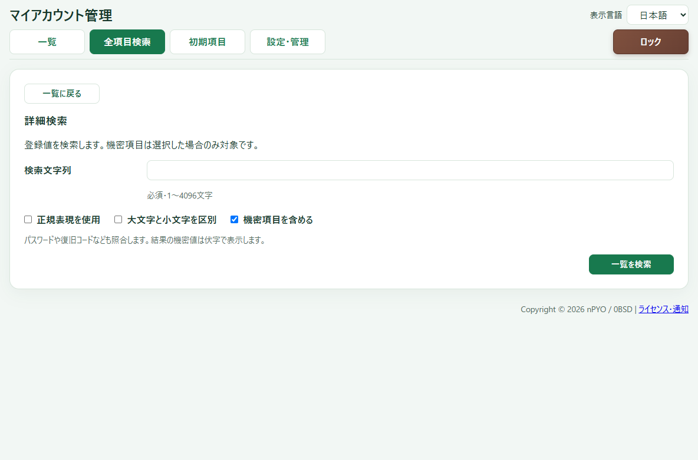
2文字列と条件を指定
例では example.com を入力し、3つのチェックを外します。
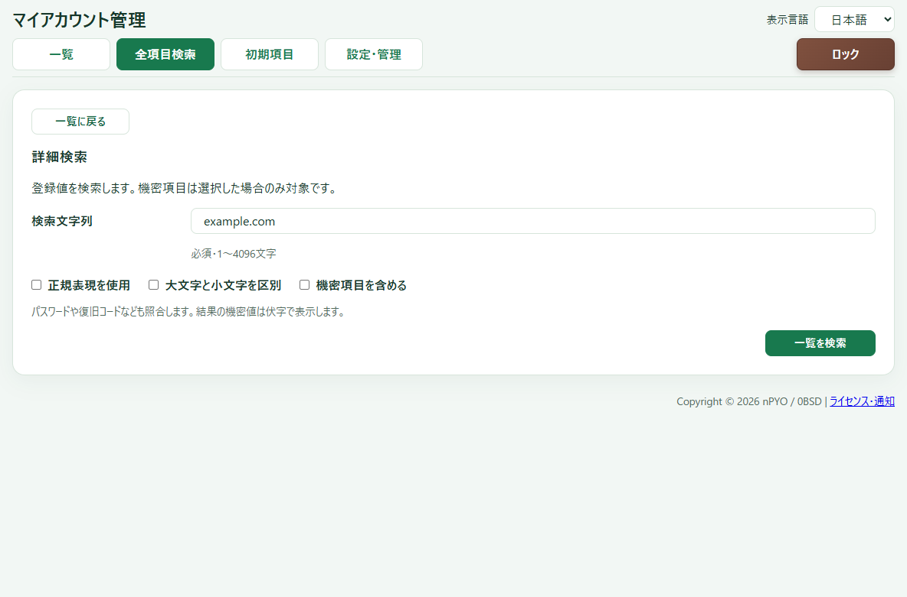
3［一覧を検索］を押す
一致した登録項目と値を確認します。

機密項目・大小文字
4別の語を入力する
ここからは別の検索例です。検索する文字列を変更し、条件を選びます。入力直後に見える結果は前の検索結果です。
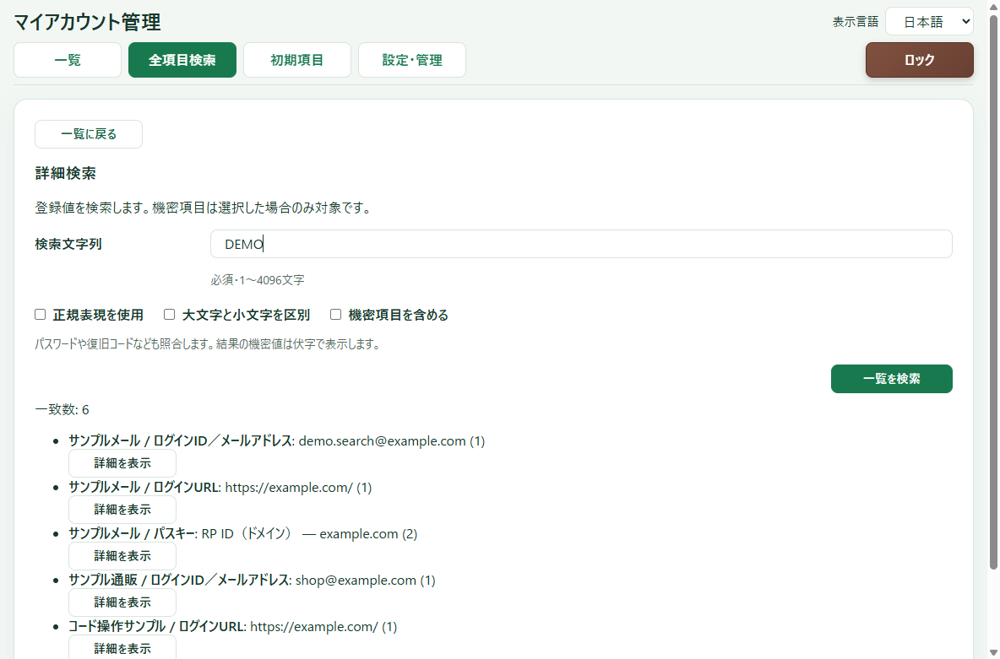
5検索して結果を見る
［一覧を検索］を押します。大小文字を区別しないため demo も一致します。
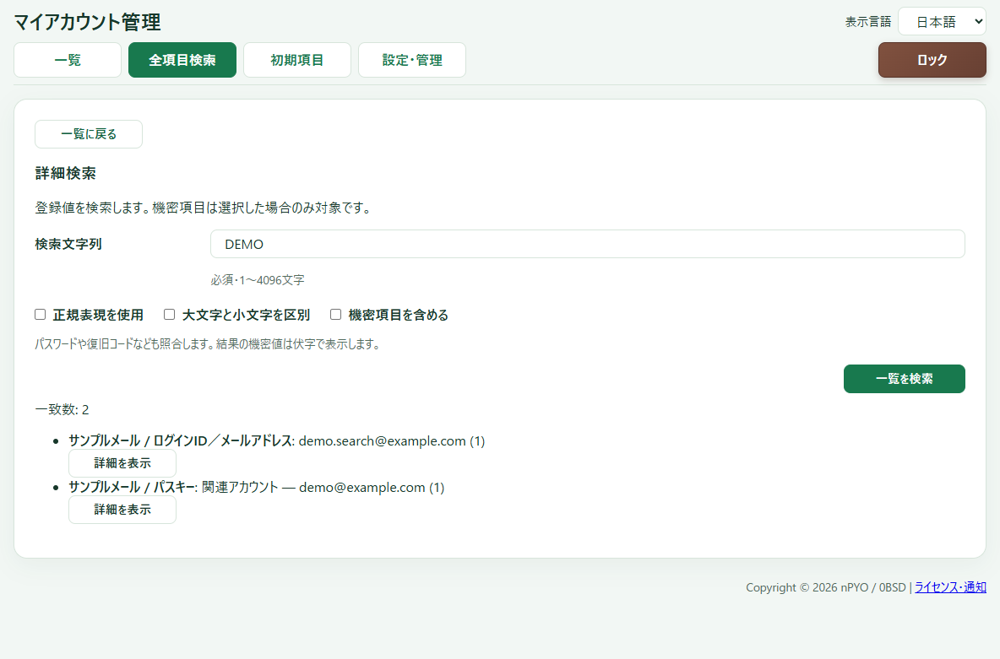
6機密項目も対象にする
［機密項目を含める］をチェックします。
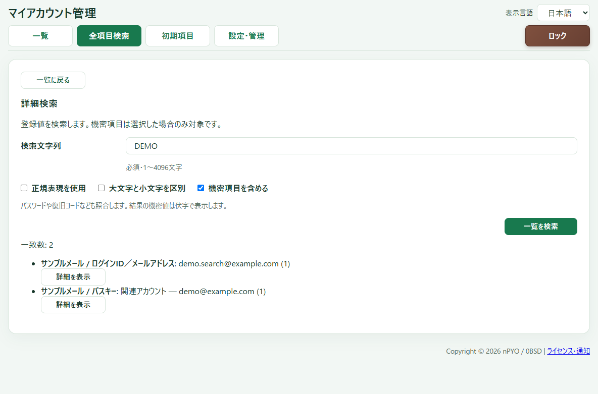
7機密項目を含めて再検索
［一覧を検索］を押します。機密値は結果でも伏字です。
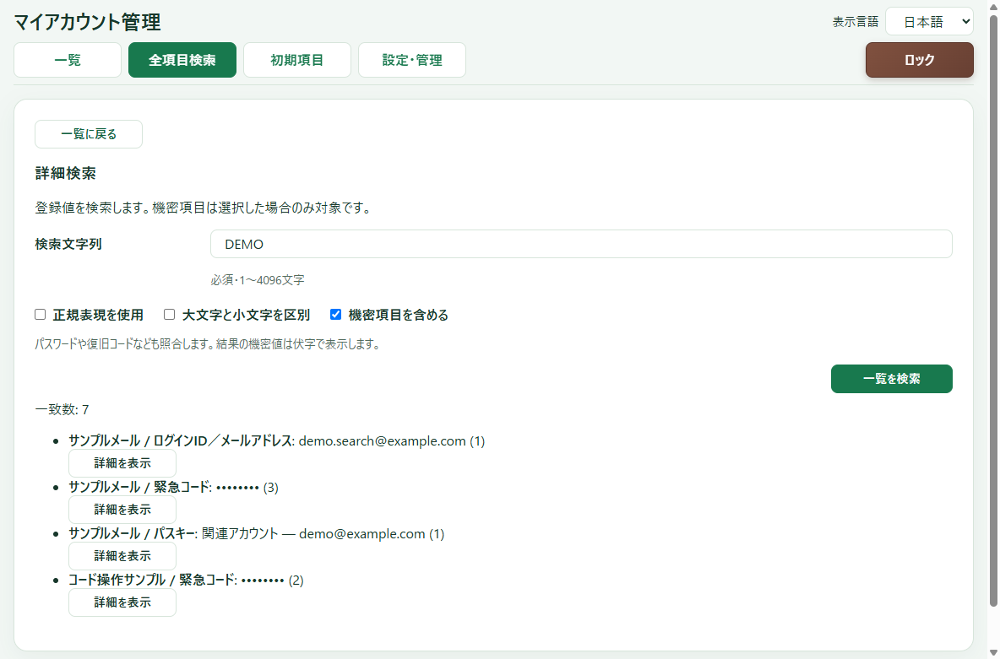
8大小文字を区別する
［大文字と小文字を区別］をチェックします。
9区別した結果を見る
［一覧を検索］を押します。小文字 demo の一致が除かれます。
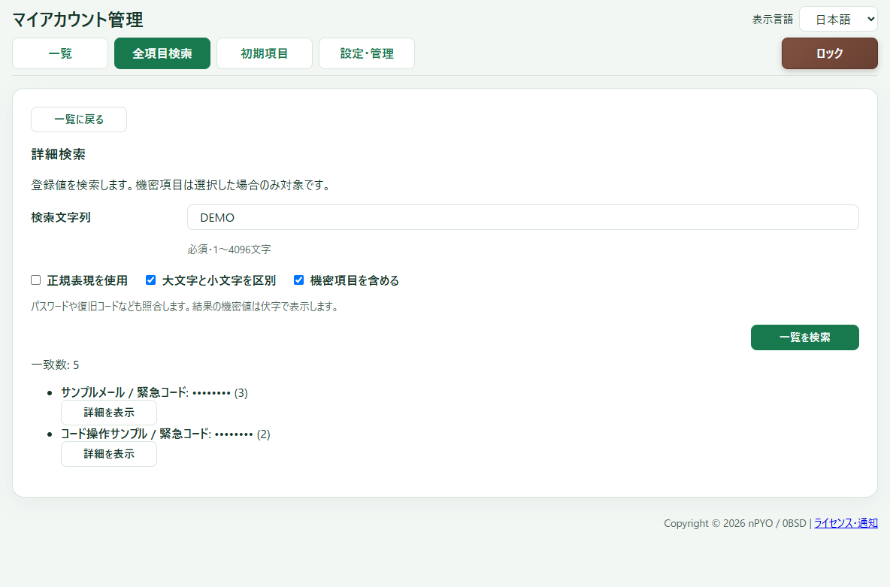
正規表現
10正規表現を指定する
［正規表現を使用］をチェックし、例として DEMO-[A-Z] を入力します。
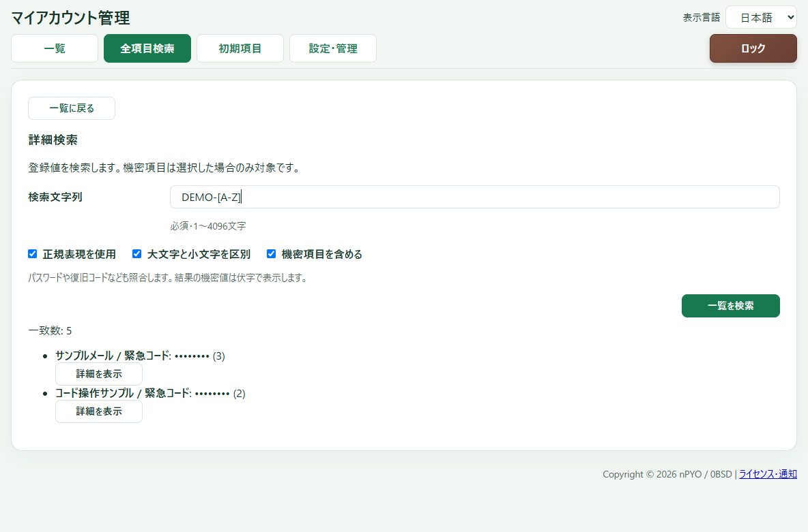
11正規表現で検索する
［一覧を検索］を押します。
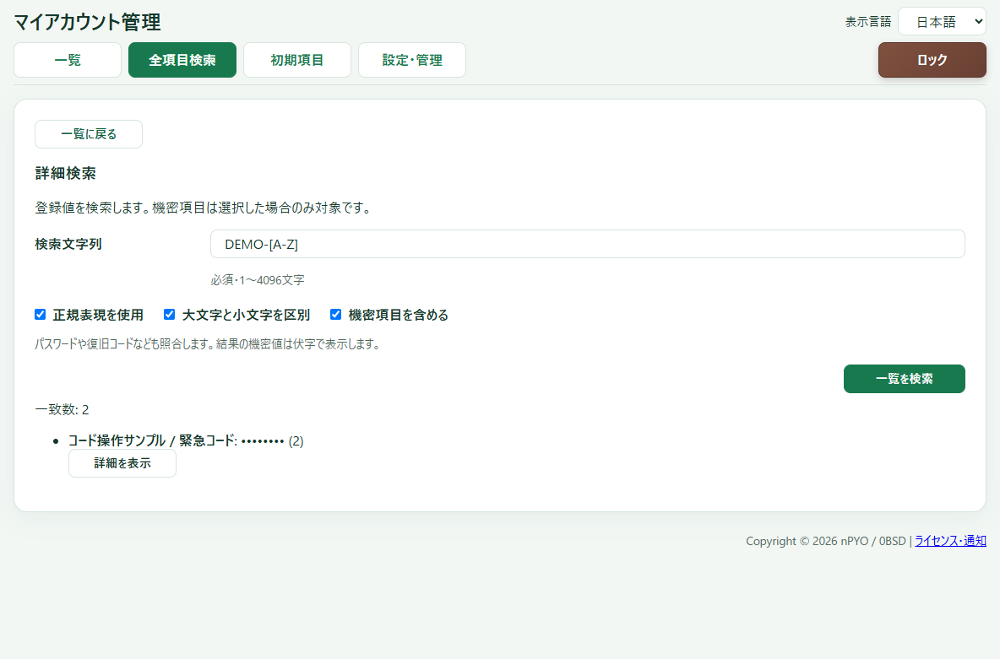
エラーからやり直す
12不正なパターンの例
［ だけでは括弧が閉じていないため、検索できません。
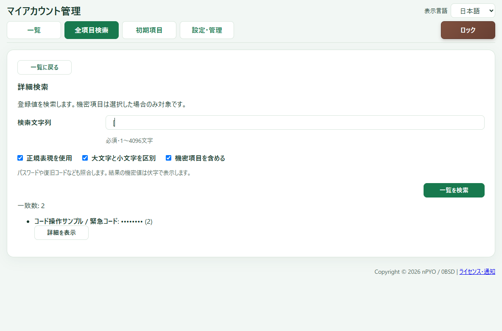
13エラーを確認する
検索時にメッセージが出たら、右上の×で閉じます。
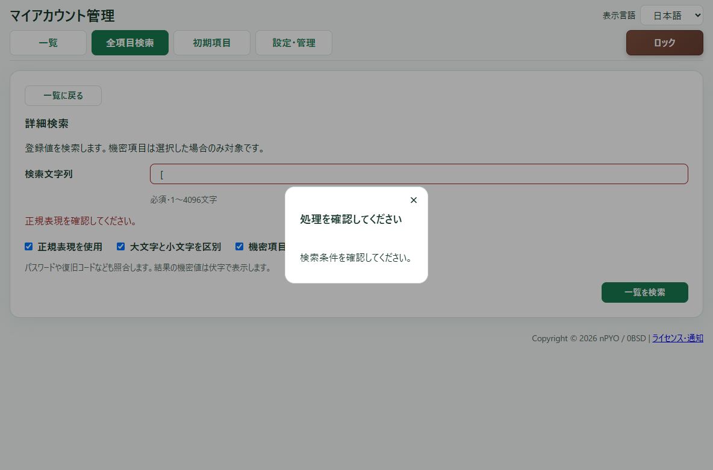
14問題の入力欄を確認する
赤い枠と［正規表現を確認してください。］を確認します。
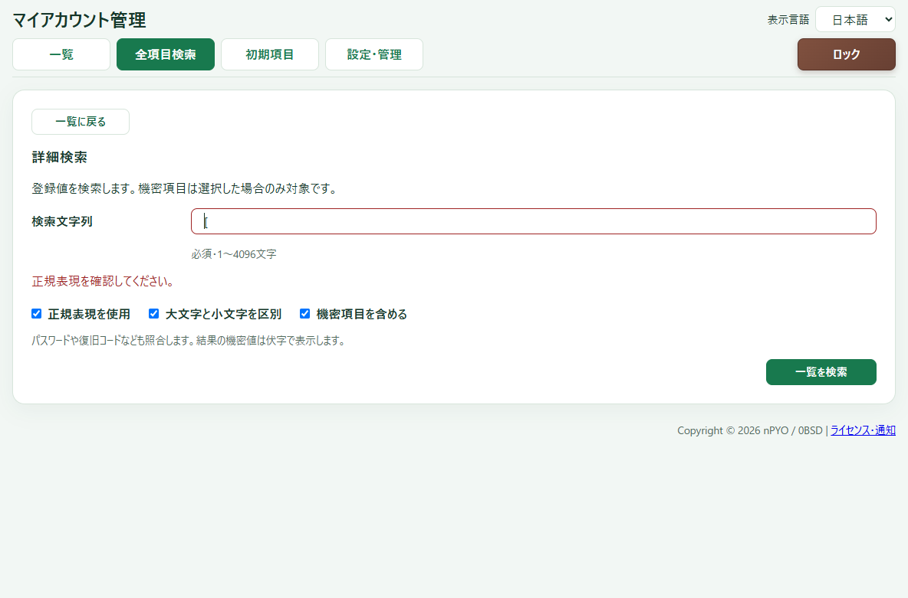
15パターンを直す
DEMO-[A-Z] に直します。

16再検索して復帰を確認
［一覧を検索］を押し、検索結果が出ることを確認します。